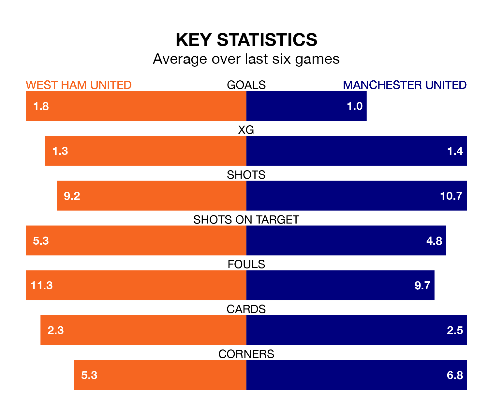

West Ham United host Manchester United on Saturday at the London Stadium in the Premier League.
In their last league match, on Sunday, West Ham beat Wolverhampton Wanderers 3-0 at home, with goals from Mohammed Kudus (two) and Jarrod Bowen.
Manchester United drew, 0-0 away at Liverpool.
In André Onana, Manchester United can rely on one of the league's safest pair of hands. He has kept six clean sheets in his 17 appearances this season, and no 'keeper has prevented the opposition scoring more often in the Premier League.
In West Ham's net, Alphonse Areola has one clean sheet in 14 games. He has conceded a goal every 55 minutes, 50% more often than the 81 minutes between goals for Onana Onana.
In the last 10 years, West Ham and Manchester United have played each other on 25 occasions. West Ham won five of them, Manchester United 14, and they drew six times.
On average, the Hammers scored 0.8 goals and the Red Devils 1.5 in those matches.
Their last meeting was on May 7, when West Ham won 1-0 at home.
With 18 goals in 17 games so far this season, the Red Devils are scoring at below the league average rate with 1.1 goals per game. But they are conceding fewer than average too, letting in 21 goals at a rate of 1.2 per game.
West Ham United, meanwhile, are above average scorers, with 1.7 goals per game, compared to a league average of 1.5. They have conceded 1.8 goals per game.
The Hammers are in good form in the Premier League, with four wins and a draw from their last six games.
With three wins and a draw over that period, the away side's form is worse – they have taken 10 points from 18, compared to the hosts' 13.
Manchester United are seventh in the table after 17 games, of which they have won nine and drawn one, earning 28 points.
West Ham are one place behind Manchester United in eighth, with eight wins and three draws putting them on 27 points.
Saturday's match will be refereed by Simon Hooper, who has taken charge of 10 Premier League games so far this season, issuing three red cards and booking 56 players. He has not awarded any penalties.
The last Manchester United game Hooper refereed was the 1-0 win at home against Wolverhampton Wanderers on August 14. He is yet to oversee a match featuring West Ham this season.
Updated: 15:16, 21/12/23